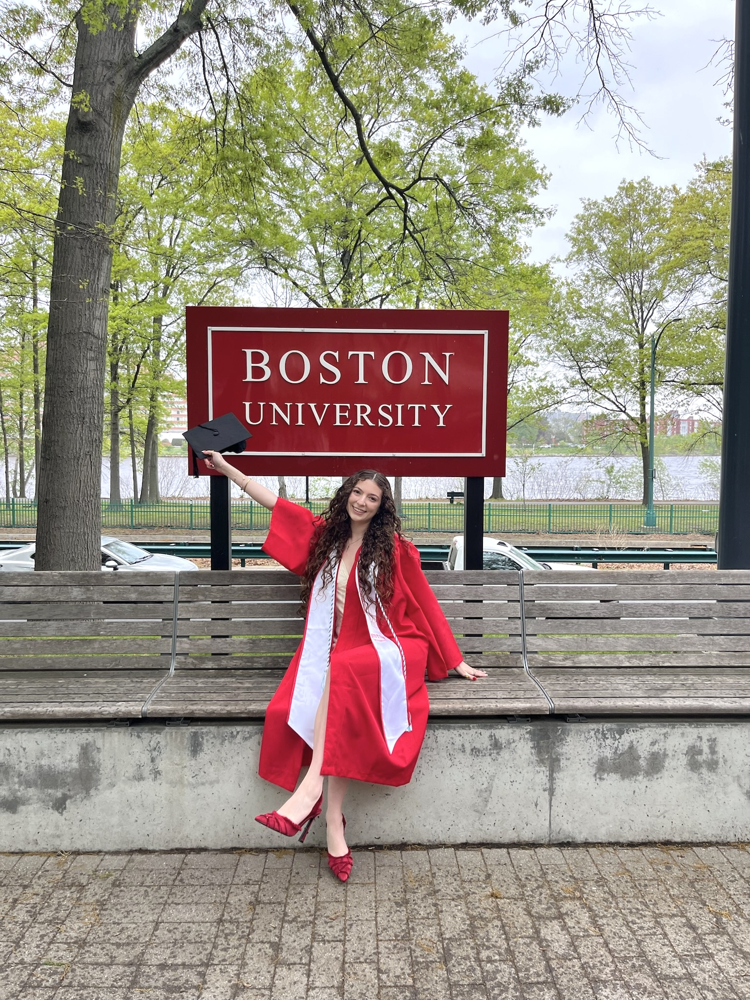

Education

After taking a semester off school during my Junior Spring to pursue an internship with NASA, I'm now in my final semester at BU. Last May I walked the stage with all of my friends, and now I'm finishing up the few remaining courses I need to complete my Computer Science major before officially graduating in December. I've also completed a minor in Spanish while at Boston University in addition to all the amazing labs and clubs I've gotten to participate in while on campus over the past four years.
Current Degree Progress:
B.S. in Computer Science | Boston University, Boston MA.
Minor in Spanish
Jan. 2027
High School Diploma | Cedar Falls High School, Cedar Falls IA.
May 2022